"If you expect nothing from sombody
you are never disappointed"
---Sylvia Plath,The Bell Jar
Campus
A sprawling campus and greenery
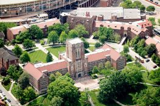
Classroom
A well-lit ambience topped with smart
boards, projectors and gadgetry to
support academic requirements
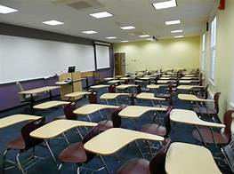
Faculty
A blend of modern and experienced
faculty with vast experience in the
field of learning and reputation
Library
A cornucopia of book-trove of modern
learning, technology, research, science
and management
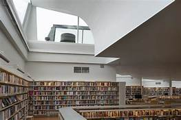
Labs
A kind of incubation centres that
promote learning by doing, the kind of
Atal Tinkering Labs (ATL)
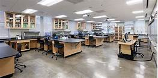
Gender ratio
Hostel
Rooms with facilities like cup-boards,
Wi-fi, Washing machine etc., A stay
home for parents, relatives and friends
from other colleges of excellence
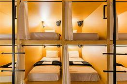
Mess
Food of both south and north Indian
varieties
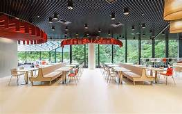
Sports facilities
A sprawling ground with facilities of
games like cricket, volley ball, tennis
and a gymnasium & sporting facilities
to stay fit and enhance sporting skills
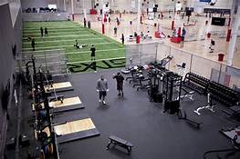
Infrastructure
Good arterial roads, uninterrupted
power supply ( UPS)/inverter, Wi-fi
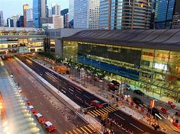
Auditorium
A good auditorium to showcase
artistic repertoire of the students and
teachers
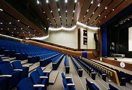
Ragging
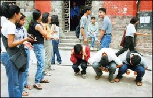
Free time
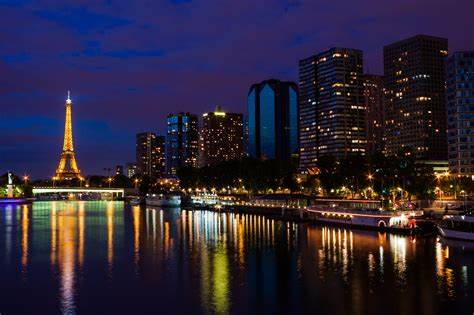
Attendance
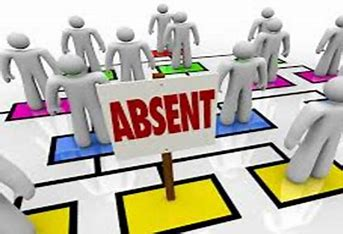
Contiguous
environment
A hub of all activities
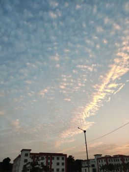
"Deep in the human unconscious is a pervasive need for a logical universe that makes sense.
But the real universe is always one step beyond logic."
― Frank Herbert, Dune
Campus
A transit campus
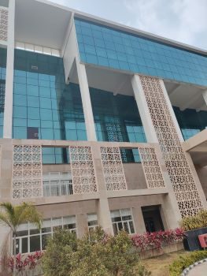
Classroom
Class room ambience is quite good. It
would be great to have ultra modern
facilities to enhance smart learning through
activity based curriculum
Good lab facilities are there but I would
rather like to have something that inspires
us to innovate and involve
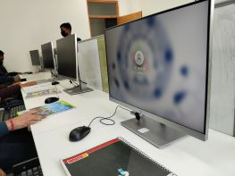
Gender ratio
Hostel
A temporary apartment accommodation but it is very good.
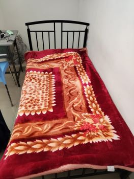
Mess
Food is satisfactory, but to those of us
who used to take daily
curd/yogurt/buttermilk it is available only
2/3 days a week.
we wish to have more nutritional diet
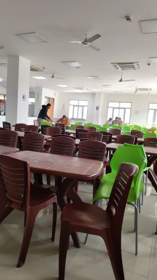
Sports facilities
A play ground is there but it is limited in
size and variety.
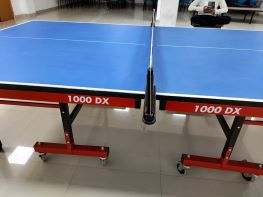
Infrastructure
Small campus with sufficient facilities
Auditorium
A room for cultural activities
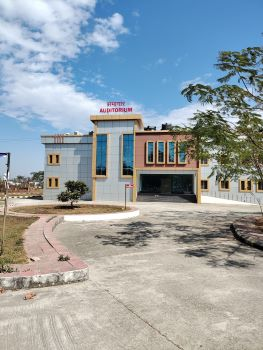
Ragging
Free time
Attendance
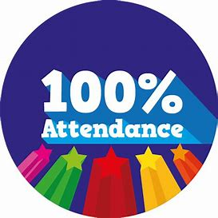
Contiguous
environment
Sleeping outskirts of the city free from din
and bustle of life